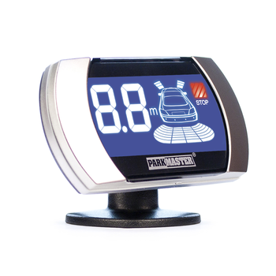

Система парковки ParkMaster 8-FJ-27-Black
Краткое описание товара
Система парковки – ультразвуковая система мониторинга расстояния. Она помогает вам при движении назад, предупреждая о препятствиях позади вашего автомобиля посредством светового, звукового и голосового оповещения (на русском языке).
Характеристики товара
Особенности:
- Рабочее напряжение 10-15V
- Рабочая температура от -40° до + 85°С
- Громкость бипера 70-90 dB
- Зона обнаружения препятствия 2,5 – 0,3 метра (для задних датчиков), 1,0 – 0,3 метра (для передних датчиков)
- 8 датчиков, контролирующих пространство спереди и позади автомобиля
- LCD индикатор с голубой подсветкой и металлическими вставками по краям индикатора
- Время отклика на обнаружение препятствия менее 0,08 сек
- Возможность регулировка громкости звукового предупреждения (с возможностью полного отключения)
- Возможность регулировка точки отсчета для автомобилей с запасным колесом, фаркопом и т.д. (вынос ноля)
- Возможность выбора голосового (на русском языке) или звукового оповещения о препятствии.
Полное описание товара
Система парковки – ультразвуковая система мониторинга расстояния. Она помогает вам при движении назад, предупреждая о препятствиях позади вашего автомобиля посредством светового, звукового и голосового оповещения (на русском языке). Система Parkmaster 8FJ27 – это восьми датчиковая система парковки с LSD дисплеем с синей подсветкой и металлическими вставками по краям индикатора, что придает дополнительный шарм интерьеру вашего автомобиля. Система имеет цифровую индикацию определения расстояния и время отклика на обнаружение препятствия менее 0,08 сек. Система 8FJ27 – оснащена функцией запоминания выносных элементов автомобиля (для задних датчиков): фаркоп, внешнее запасное колесо и тд. Система парковки способна работать в широком диапазоне температур от -40° до + 85°С.